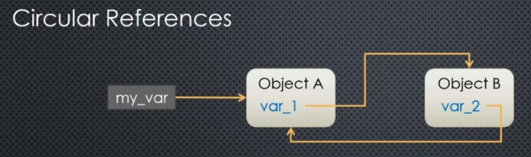

Python - memory, reference counts, garbage collection
Memory in Python¶ ¶
In Python, everything is an object and is stored in memory. This memory is the heap. The id() func will give you the address of any obj and when you pass that to hex(), you can turn that base-10 address to hex notation for reading.
When you create a variable and assign value, the value gets stored in memory first, then the address to the value is attached to the variable. Thus if you create another variable and point to the first, the address is additionally attached to the new variable, making it a pass by reference in Python.
a = 25
print(id(a)) # decimal or base 10
print(hex(id(a))) # hex or base 8 version
Reference counter in Python¶ ¶
Python memory manager maintains a reference count for all objects in memory. You can access it via sys.getrefcount() function. But this has an artifact which bumps the count by 1. This is because when you run the function, it ends up accessing the object and that act shows up as another instance.
You can subtract 1 from sys.getrefcount() or use a lower level function ctypes.c_long.from_address(var_address).value which will not have this artifact. But, this function needs the address of the object directly.
l1 = [3, 'baby', 5, -10]
l2 = l1
print(id(l1) == id(l2)) # pass by reference
print(l2 == l1) # True
print(l2 is l1) # ? also True
print(hex(id(l1)))
# use sys module to count reference
import sys
sys.getrefcount(l1), sys.getrefcount(l2) # will bump both by 1, resulting in 3
# use lower level ctypes
def lower_ref_count(var_address: int) -> int:
import ctypes
return ctypes.c_long.from_address(var_address).value
lower_ref_count(id(l1)), lower_ref_count(id(l2)) # should return 2
l3 = l2
sys.getrefcount(l1) # should return 4
Now, let us free up the variables and see what happens to the reference counts
l3 = 'apple'
print(sys.getrefcount(l1)) # returns one less now
print(lower_ref_count(id(l1)))
Now, if you unset l1 then l2 still points to the same object in memory. So the ref count should be down to 1 not 0.
# unset the original var
l1 = None
print(l2)
print(sys.getrefcount(l2)) # returns 2
print(lower_ref_count(id(l2))) # returns to 1
Now, if you remove all references to the obj, what happens to the ref count to that address??
l2_id = id(l2)
l2 = 'apple'
print(lower_ref_count(l2_id)) # returns to 0
print(lower_ref_count(l2_id)) # now, Python has assigned or reused that address to store something else
In Python, we typically don’t work with memory addresses or ref counts in Python. But it can be helpful to debug memory leaks and circular reference issues.
Garbabe collection¶ ¶
In Python, the gc module represents the garbage collector. The GC uses reference counters and a few other logic to do its work. The duty of the GC is to free up address spaces once a variable / object is no longer needed. The GC runs in the background and in general, it is not predictable when a variable will be removed once its reference count drops to 0.
import gc
len(gc.get_objects()) ## returns the list of all objects gc tracks
It is suprising how many objects the gc keeps track of.
print(gc.get_objects()[0])
print(gc.get_objects()[100])
Circular references¶ ¶
To illustrate the effect of garbage collection, let us set up a complicated (and potentially bad) code that involves a circular reference.

The variable my_var points to A, but A has a property var_1 that points to B and B has a property var_2 which points back to A. If my_var is removed or reassigned, then the ref counts of A and B would still be 1 each because of the circular reference.
Will these objects get ever cleaned up, since their ref counts will not drop to 0? Yes, the garbage collector can, in general, resolve circular references and will clean them up. If you need to represent something in circ-ref, then you can customize the __del__() the destructor method of the objects to represent any specific things to be done upon clean up.
However, prior to Python 3.5, the GC would fail to resolve circular references if it had a custom destructor and these would not be cleaned up, leading to memory leaks. However, in modern versions, the gc can remove objects entangled in circular references as well. Because of this, we need to manually pause the gc to illustrate the scenario below:
import ctypes, gc
def lower_ref_count(var_address:int) -> int:
return ctypes.c_long.from_address(var_address).value
def object_in_gc(var_address: int) -> bool:
"""Checks if the given mem address is in Garbage collector table"""
for obj in gc.get_objects():
if id(obj) == var_address:
return True
return False
Now let us define 2 classes that will implement the circ-ref shown above.
class A:
def __init__(self):
self.b = B(self) # construct instance of B using an instance of A
print(f'A: self: {hex(id(self))}, b: {hex(id(self.b))}')
class B:
def __init__(self, A):
self.a = A # other half of circ-ref
print(f"B: self: {hex(id(self))}, a: {hex(id(self.a))}")
# disable garbage collector
gc.disable()
my_var = A()
hex(id(my_var)) # should return the same address as that of A
print(hex(id(my_var.b))) # should returnt he same address as that of B
print(hex(id(my_var)) == hex(id(my_var.b.a))) # should eval to True
Now, let us store the addresses into vars
a_add = id(my_var)
b_add = id(my_var.b)
print(lower_ref_count(a_add)) ## should be 2 as my_var and B point to A
print(lower_ref_count(b_add)) ## should be 1 as only A points to B
Next, let us check if these objs are on the GC table
print(object_in_gc(a_add))
print(object_in_gc(b_add))
Delete my_var and see how the GC behaves
my_var = None
print(lower_ref_count(a_add)) ## should be 1
print(lower_ref_count(b_add)) ## should be 1 all because of circ-ref
gc.collect()
print(object_in_gc(a_add))
print(object_in_gc(b_add)) # we caught it while it was cleaning up!!!
print(object_in_gc(a_add))
print(object_in_gc(b_add)) # cleaned up
Let us check the ref count of our addresses, buckle up!
print(lower_ref_count(a_add))
print(lower_ref_count(b_add))
print(lower_ref_count(a_add))
print(lower_ref_count(b_add))
print(lower_ref_count(a_add))
print(lower_ref_count(b_add))
Well, this is why the ref count and garbage collection in Python is not generally handled directly by developers. It is not deterministic. Use these only to debug mem leaks!!
# last time
print(lower_ref_count(a_add))
print(lower_ref_count(b_add))
none_id = id(None)
true_id = id(True)
print(none_id, true_id)
print(sys.getrefcount(none_id))
print(sys.getrefcount(true_id))
print(lower_ref_count(none_id))
print(lower_ref_count(true_id))
Now this is why, you need to be careful with the lower level C types ;-)
from copy import copy
l4 = [4,5,6,7]
l5 = copy(l4)
print(l4 == l5)
print(l4 is l5) # false as it is a new copy
# lets prove it, the hex should be different
print(hex(id(l4)))
print(hex(id(l5)))